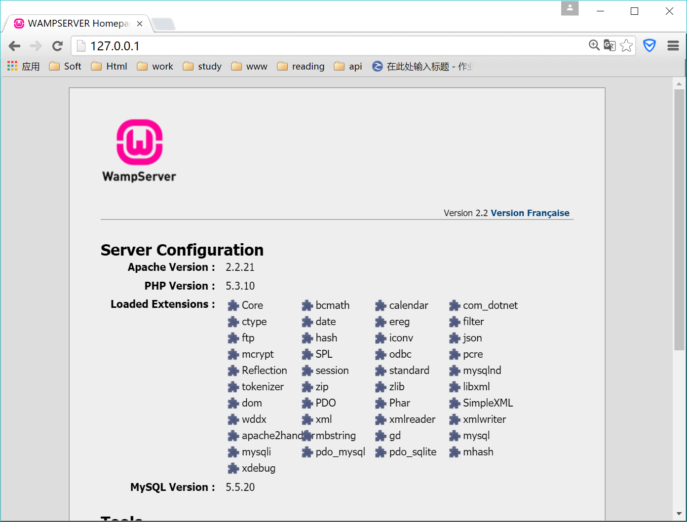
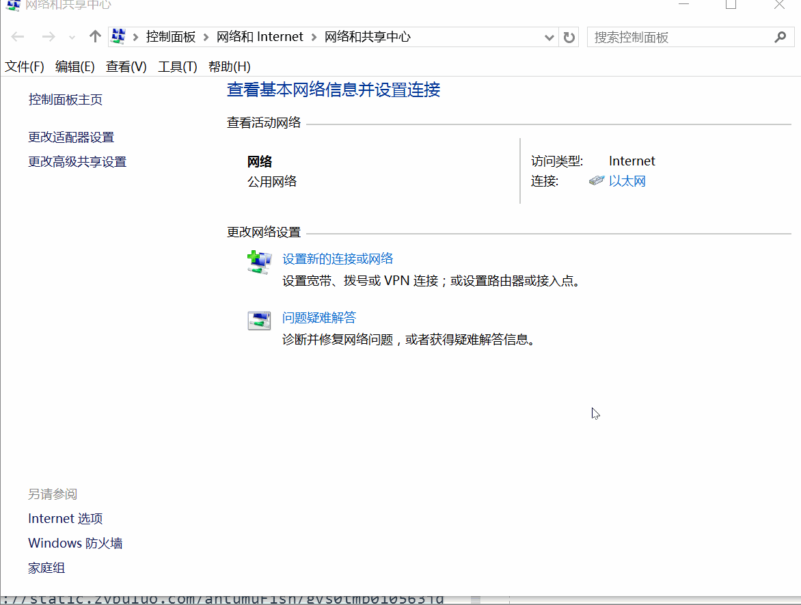
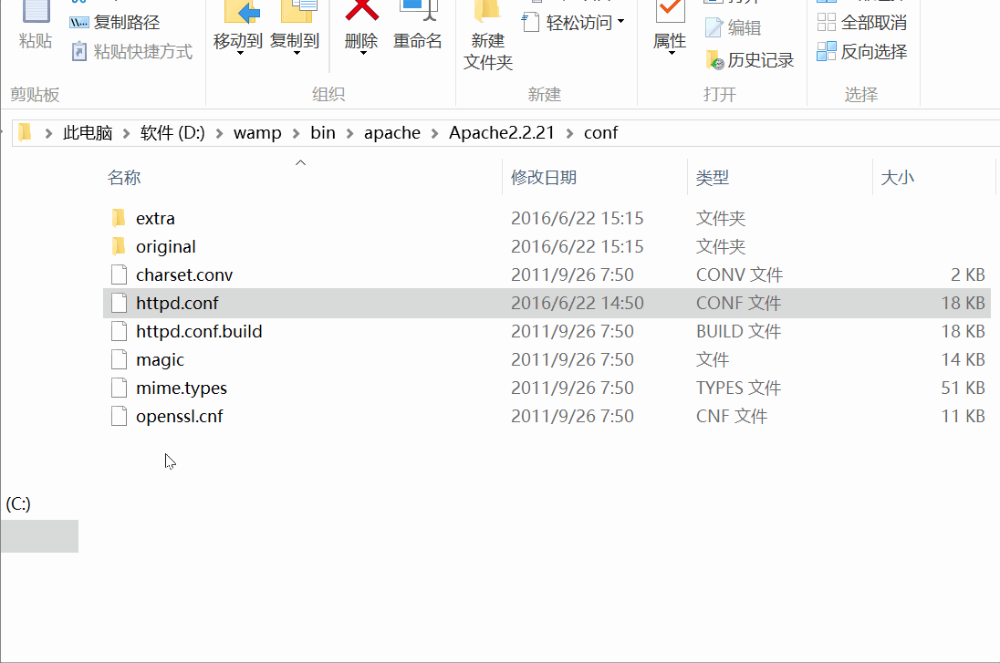
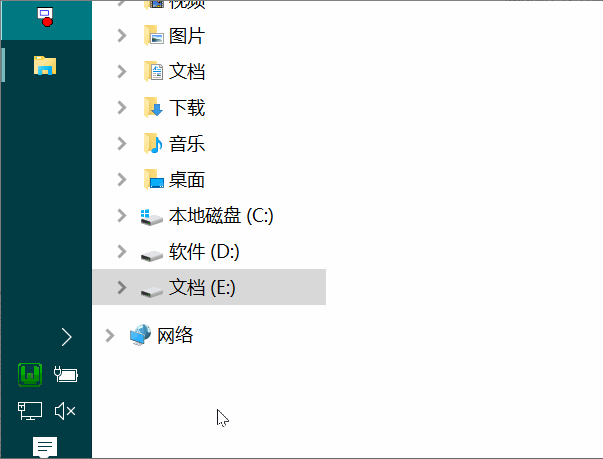

HTTP服务搭建
AMP
AMP:A:
Apache,M:MySQL,P:PHP
Apache 世界排名第一的服务器软件,特点是
简单,速度快,性能稳定MySQL 得益于他体积小、速度快、使用成本低，而且是开源哦，所以很多网站都选用MySql作为他们的数据库.
- PHP 展开后PHP: Hypertext Preprocessor，中文名：
超文本预处理器,直接将代码嵌入HTML文档中执行,简单易学,容易上手.
AMP集成环境
刚刚已经解释了这几个单词的意思,其中
AMP是三个独立的软件,但是对于初学者而言分别安装以及配置需要掌握一定的软件知识,所以就有了很多AMP集成环境帮助我们简化安装
- WAMP: 在
windows平台下如果想要一步到位安装好这些软件,可以使用wamp,其中w的意思为windows指的是windows操作系统 软件的官网为:wamp官方网站 - XAMPP: 不同于
wamp针对于windows,XAMPP可以安装在Linux,Windows,MAC OS X,Solaris这些操作系统上面
WAMP安装,配置,注意点
这里选用
wamp作为学习环境,接下来演示如何安装并设置wamp
WAMP安装
- 双击提供的安装包
- 点击
Next - 选择安装路径,注意:不要使用中文路径.建议使用跟图片一致的路径
- 如果担心安装完成后找不到
wamp可以将两个方框全部勾选,点击next继续安装 - 点击
install开始安装 - 安装完毕以后点击
finish即可启动wamp - 启动完成能够在任务栏的右下角看到这个图标即表示安装成功
测试访问
打开浏览器输入
127.0.0.1查看显示的内容,如果是第一次安装,默认显示的应该是如下图片
- 127.0.0.1含义:
127.0.0.1是回送地址，指本地机，一般用来测试使用,如果想要让其他电脑也能够访问,需要进行一些配置,详见下文.

WAMP图标橙色解决方案
如果没有使用过自己的电脑配置服务器那么
WAMP默认应该为绿色的图标,那么如果WAMP启动,显示的是橙色图标怎么办呢?
1.检查是否开启了服务:保证Apache,MySQL的服务都是启动状态即可
2.检查是否开启了微软自带的IIS服务:首先打开控制面板,保证动态图最后选中的Internet Information Services没有被勾选即可
3.修改端口号:在httpd.conf中搜索 listen,大概在46行的位置
Listen 80
改为 listen 8080
注这里可以改为任意的端口,修改完毕之后, 保存并重启wamp
访问时在ip地址之后添加:8080 端口号即可
如 192.168.18.125:8080
4.终极解决: 卸载-删除文件夹(wamp安装的文件夹)-重装
配置局域网访问
安装好了
WAMP之后就能够通过自己的浏览器输入127.0.0.1,如果想要让同一局域网中的其他电脑也能够访问,需要进行如下配置
- 关闭防火墙:首先打开
控制面板
修改
httpd.conf文件因为Apache的配置默认不允许外部访问,我们需要修改配置 找到D:\wamp\bin\apache\Apache2.2.21\conf文件 使用文本编辑工具打开,通过搜索功能找到onlineoffline tag - don't remove这句话，将在234行附近的 Allow from 127.0.0.1 替换为 Allow from all 保存,然后重启wamp的所有服务即可获取本机IP地址:
- 方法1:
- 打开
控制面板->网络和Internet->网络和共享中心->更改适配器设置 - 找到正在连接的网络,
双击
- 打开
- 方法2:
- 打开命令行工具
- 输入
ipconfig
- 方法1:
局域网内访问: 使用一台相同局域网内的
拥有浏览器的设备即可通过刚刚获取的IP地址进行访问常见的通局域网计算机:
局域网的概念这里不做拓展,为了方便测试当满足下列情况可以尝试访问
- 连接同一个
wifi的计算机(手机也可以测试) - 连接同一个
交换机的计算机- 同教室的电脑
- 同公司的电脑
- 连接同一个
配置网站根目录
(注: 这里使用的路径为上述安装时的路径,如果没有安装在D盘,那么需要找到对应的路径)
- 找到
WAMP的安装目录:D:\wamp - 找到
Apache的配置文件D:\wamp\bin\apache\Apache2.2.21\conf - 修改
http.conf文件 使用文本编辑工具打开httpd.conf文件,搜索documentRoot如果是初次安装,应该分别在178行,205行 修改完毕以后记得保存ctrl+s

- 重启
WAMP服务 左键点击wamp图标,选择重新启动所有服务 - 建立文件夹,尝试访问 为了保证访问时确实有内容,在
E:盘下建立www文件夹,并且在改文件夹下放入文件,再次尝试通过127.0.0.1进行访问